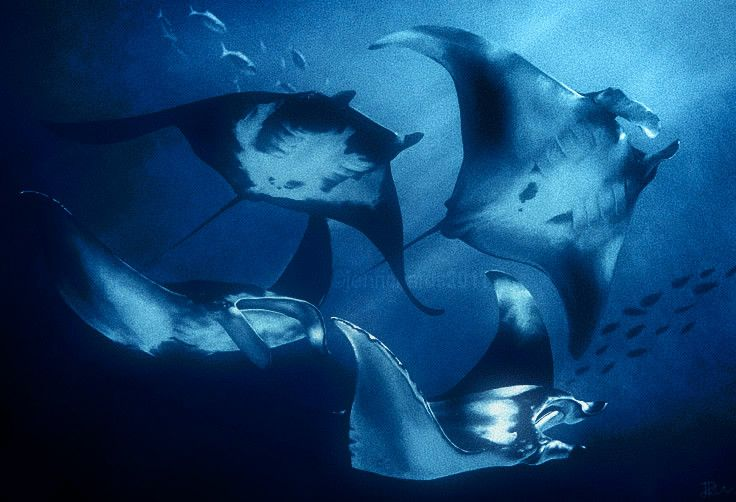

Observador do abismo
Baal conhece o valor de ficar quieto até que o ambiente revele sozinho aquilo que tentou esconder.
Entrar no dossiê de Baal deveria parecer afundar. A superfície fica para trás, o som diminui, as cores se tornam azuis mais profundos e tudo ao redor passa a existir num ritmo próprio. Ele é o sacerdote da Solidão não porque rejeita o mundo, mas porque aprendeu a caminhar num lugar onde quase ninguém consegue permanecer tempo suficiente para entender o que está vendo.

A página de Baal foi reorganizada como um santuário submerso: medusas translúcidas, estrelas do mar, correntes lentas, sombras marinhas e pequenas aranhas que parecem ter feito do fundo do abismo a própria casa. O efeito não é de horror, mas de afastamento mágico — um lugar bonito demais para ser completamente seguro, e silencioso demais para ser dividido com facilidade.
Baal conhece o valor de ficar quieto até que o ambiente revele sozinho aquilo que tentou esconder.
Ele quer compreender o que existe nos outros, mas mantém a própria intimidade protegida como se fosse relíquia.
Sua presença lembra água profunda: calma na aparência, imensa por dentro, difícil de atravessar sem se perder.
Quando Baal decide seguir um mistério até o fim, o destino quase sempre cobra alguém com desaparecimento, silêncio ou ausência.
Imagens reunidas para definir a atmosfera de Baal: oceanos azuis e brilhantes, criaturas flutuando como pensamentos, ruas vazias banhadas por lua, cidades submersas, coelhos perdidos, estrelas vivas e uma beleza quieta que parece existir longe demais da superfície para ser explicada com palavras comuns.
O mar, as estrelas e as criaturas delicadas não aparecem aqui apenas como beleza. Eles representam a lógica da Solidão: profundidade, distância, observação, calma inquieta e um tipo de magia que não se oferece para todos. A presença das aranhas lembra a paciência dele; as medusas, sua delicadeza perigosa; e o azul constante transforma toda a página numa descida lenta.
Desde cedo, uma pergunta sem resposta se tornava um território inteiro dentro dele.
Baal não larga facilmente um rastro. O que começa como curiosidade se torna permanência, vigilância e método.
No culto, sua distância deixa de ser desvio e vira função: observar, esperar, encontrar padrões e trazer respostas.